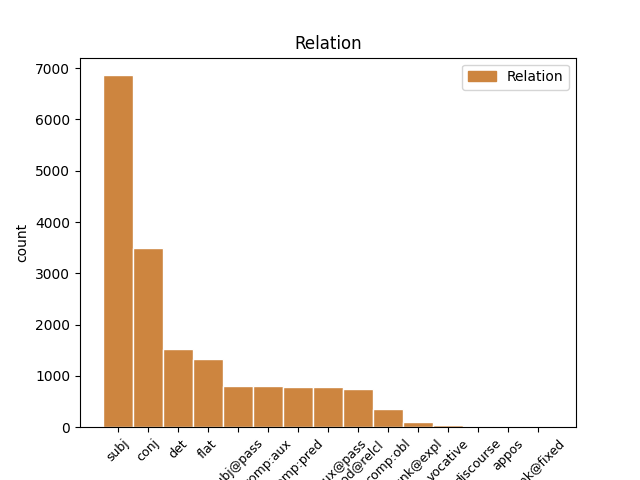
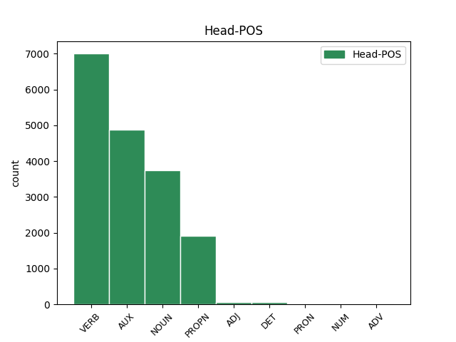
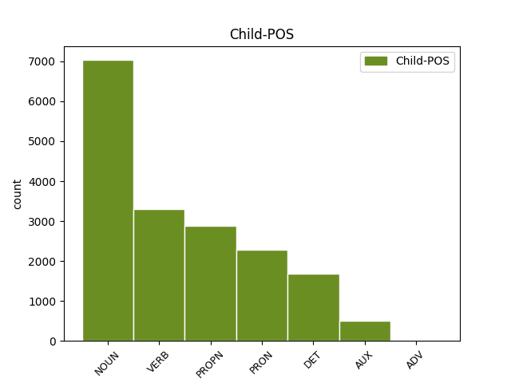

Distribution of features within this leaf



Agreement Rules sorted by frequency.
- When the dependent token is the subject(subj) of the head token, and the dependent token is NOUN.
1 Подобна _ _ _ _ 0 _ _ _
2 диспропорция диспропорция NOUN Ncfsi Definite=Ind|Gender=Fem|Number=Sing 3 subj _ _
3 говори говоря VERB Vpitf-r3s Aspect=Imp|Mood=Ind|Number=Sing|Person=3|Tense=Pres|VerbForm=Fin|Voice=Act 0 _ _ _
4 за _ _ _ _ 0 _ _ _
5 липсата _ _ _ _ 0 _ _ _
6 на _ _ _ _ 0 _ _ _
7 интерес _ _ _ _ 0 _ _ _
8 у _ _ _ _ 0 _ _ _
9 държавите _ _ _ _ 0 _ _ _
10 от _ _ _ _ 0 _ _ _
11 ЕС _ _ _ _ 0 _ _ _
12 . _ _ _ _ 0 _ _ _
1 План _ _ _ _ 0 _ _ _
2 2000 _ _ _ _ 0 _ _ _
3 , _ _ _ _ 0 _ _ _
4 който който PRON Pre-os-m Case=Nom|Gender=Masc|Number=Sing|PronType=Rel 5 subj _ _
5 уточнява уточнявам VERB Vpitf-r3s Aspect=Imp|Mood=Ind|Number=Sing|Person=3|Tense=Pres|VerbForm=Fin|Voice=Act 0 _ _ _
6 размера _ _ _ _ 0 _ _ _
7 на _ _ _ _ 0 _ _ _
8 финансирането _ _ _ _ 0 _ _ _
9 до _ _ _ _ 0 _ _ _
10 2006 _ _ _ _ 0 _ _ _
11 г. _ _ _ _ 0 _ _ _
12 , _ _ _ _ 0 _ _ _
13 предвижда _ _ _ _ 0 _ _ _
14 600 _ _ _ _ 0 _ _ _
15 милиарда _ _ _ _ 0 _ _ _
16 евро _ _ _ _ 0 _ _ _
17 за _ _ _ _ 0 _ _ _
18 15-те _ _ _ _ 0 _ _ _
19 членки _ _ _ _ 0 _ _ _
20 . _ _ _ _ 0 _ _ _
1 Ето _ _ _ _ 0 _ _ _
2 защо _ _ _ _ 0 _ _ _
3 има _ _ _ _ 0 _ _ _
4 изгледи _ _ _ _ 0 _ _ _
5 на _ _ _ _ 0 _ _ _
6 заключителните _ _ _ _ 0 _ _ _
7 дебати _ _ _ _ 0 _ _ _
8 през _ _ _ _ 0 _ _ _
9 декември _ _ _ _ 0 _ _ _
10 депутатите _ _ _ _ 0 _ _ _
11 да _ _ _ _ 0 _ _ _
12 прокарат _ _ _ _ 0 _ _ _
13 своите свой DET Psxlop--d Definite=Def|Number=Plur|Poss=Yes|PronType=Prs|Reflex=Yes 14 det _ _
14 искания искане NOUN Ncnpi Definite=Ind|Gender=Neut|Number=Plur 0 _ _ _
15 за _ _ _ _ 0 _ _ _
16 по-големи _ _ _ _ 0 _ _ _
17 разходи _ _ _ _ 0 _ _ _
18 , _ _ _ _ 0 _ _ _
19 свързани _ _ _ _ 0 _ _ _
20 с _ _ _ _ 0 _ _ _
21 външната _ _ _ _ 0 _ _ _
22 политика _ _ _ _ 0 _ _ _
23 и _ _ _ _ 0 _ _ _
24 политиката _ _ _ _ 0 _ _ _
25 на _ _ _ _ 0 _ _ _
26 подпомагане _ _ _ _ 0 _ _ _
27 на _ _ _ _ 0 _ _ _
28 други _ _ _ _ 0 _ _ _
29 страни _ _ _ _ 0 _ _ _
30 . _ _ _ _ 0 _ _ _
1 Докато _ _ _ _ 0 _ _ _
2 водещи _ _ _ _ 0 _ _ _
3 европолитици _ _ _ _ 0 _ _ _
4 като _ _ _ _ 0 _ _ _
5 комисарят _ _ _ _ 0 _ _ _
6 по _ _ _ _ 0 _ _ _
7 разширяването _ _ _ _ 0 _ _ _
8 Гюнтер гюнтер PROPN Npmsi Definite=Ind|Gender=Masc|Number=Sing 0 _ _ _
9 Ферхойген ферхойген PROPN Hmsi Definite=Ind|Gender=Masc|Number=Sing 8 flat _ _
10 дори _ _ _ _ 0 _ _ _
11 мечтаят _ _ _ _ 0 _ _ _
12 за _ _ _ _ 0 _ _ _
13 приемането _ _ _ _ 0 _ _ _
14 на _ _ _ _ 0 _ _ _
15 група _ _ _ _ 0 _ _ _
16 до _ _ _ _ 0 _ _ _
17 10 _ _ _ _ 0 _ _ _
18 страни _ _ _ _ 0 _ _ _
19 , _ _ _ _ 0 _ _ _
20 бюджетните _ _ _ _ 0 _ _ _
21 специалисти _ _ _ _ 0 _ _ _
22 все _ _ _ _ 0 _ _ _
23 още _ _ _ _ 0 _ _ _
24 се _ _ _ _ 0 _ _ _
25 лутат _ _ _ _ 0 _ _ _
26 в _ _ _ _ 0 _ _ _
27 неизвестност _ _ _ _ 0 _ _ _
28 . _ _ _ _ 0 _ _ _
1 Ето _ _ _ _ 0 _ _ _
2 защо _ _ _ _ 0 _ _ _
3 има _ _ _ _ 0 _ _ _
4 изгледи _ _ _ _ 0 _ _ _
5 на _ _ _ _ 0 _ _ _
6 заключителните _ _ _ _ 0 _ _ _
7 дебати _ _ _ _ 0 _ _ _
8 през _ _ _ _ 0 _ _ _
9 декември _ _ _ _ 0 _ _ _
10 депутатите _ _ _ _ 0 _ _ _
11 да _ _ _ _ 0 _ _ _
12 прокарат _ _ _ _ 0 _ _ _
13 своите _ _ _ _ 0 _ _ _
14 искания _ _ _ _ 0 _ _ _
15 за _ _ _ _ 0 _ _ _
16 по-големи _ _ _ _ 0 _ _ _
17 разходи _ _ _ _ 0 _ _ _
18 , _ _ _ _ 0 _ _ _
19 свързани _ _ _ _ 0 _ _ _
20 с _ _ _ _ 0 _ _ _
21 външната _ _ _ _ 0 _ _ _
22 политика политика NOUN Ncfsi Definite=Ind|Gender=Fem|Number=Sing 0 _ _ _
23 и _ _ _ _ 0 _ _ _
24 политиката политика NOUN Ncfsd Definite=Def|Gender=Fem|Number=Sing 22 conj _ _
25 на _ _ _ _ 0 _ _ _
26 подпомагане _ _ _ _ 0 _ _ _
27 на _ _ _ _ 0 _ _ _
28 други _ _ _ _ 0 _ _ _
29 страни _ _ _ _ 0 _ _ _
30 . _ _ _ _ 0 _ _ _
1 В _ _ _ _ 0 _ _ _
2 четвъртък _ _ _ _ 0 _ _ _
3 евродепутатите _ _ _ _ 0 _ _ _
4 обсъждаха обсъждам VERB Vpitf-o3p Aspect=Imp|Mood=Ind|Number=Plur|Person=3|Tense=Past|VerbForm=Fin|Voice=Act 0 _ _ _
5 и _ _ _ _ 0 _ _ _
6 гласуваха гласувам VERB Vpitf-o3p Aspect=Imp|Mood=Ind|Number=Plur|Person=3|Tense=Past|VerbForm=Fin|Voice=Act 4 conj _ _
7 на _ _ _ _ 0 _ _ _
8 първо _ _ _ _ 0 _ _ _
9 четене _ _ _ _ 0 _ _ _
10 проектобюджета _ _ _ _ 0 _ _ _
11 . _ _ _ _ 0 _ _ _
1 Брюксел брюксел PROPN Npmsi Definite=Ind|Gender=Masc|Number=Sing 2 subj _ _
2 прави правя-(се) VERB Vpitf-r3s Aspect=Imp|Mood=Ind|Number=Sing|Person=3|Tense=Pres|VerbForm=Fin|Voice=Act 0 _ _ _
3 криви _ _ _ _ 0 _ _ _
4 сметки _ _ _ _ 0 _ _ _
5 за _ _ _ _ 0 _ _ _
6 разширяването _ _ _ _ 0 _ _ _
1 Майка _ _ _ _ 0 _ _ _
2 й _ _ _ _ 0 _ _ _
3 заяви _ _ _ _ 0 _ _ _
4 , _ _ _ _ 0 _ _ _
5 че _ _ _ _ 0 _ _ _
6 се _ _ _ _ 0 _ _ _
7 смята _ _ _ _ 0 _ _ _
8 за _ _ _ _ 0 _ _ _
9 виновна _ _ _ _ 0 _ _ _
10 , _ _ _ _ 0 _ _ _
11 защото _ _ _ _ 0 _ _ _
12 е съм AUX Vxitf-r3s Aspect=Imp|Mood=Ind|Number=Sing|Person=3|Tense=Pres|VerbForm=Fin|Voice=Act 0 _ _ _
13 купувала купувам VERB Vpitcao-sfi Aspect=Imp|Definite=Ind|Gender=Fem|Number=Sing|Tense=Past|VerbForm=Part|Voice=Act 12 comp:aux _ _
14 евтино _ _ _ _ 0 _ _ _
15 месо _ _ _ _ 0 _ _ _
16 . _ _ _ _ 0 _ _ _
1 Единият _ _ _ _ 0 _ _ _
2 от _ _ _ _ 0 _ _ _
3 войниците _ _ _ _ 0 _ _ _
4 бе съм AUX Vxitf-t3s Aspect=Imp|Mood=Ind|Number=Sing|Person=3|Tense=Past|VerbForm=Fin|Voice=Act 0 _ _ _
5 намерен намеря-(се) VERB Vpptcv--smi Aspect=Perf|Definite=Ind|Gender=Masc|Number=Sing|VerbForm=Part|Voice=Pass 4 comp:aux@pass _ _
6 да _ _ _ _ 0 _ _ _
7 виси _ _ _ _ 0 _ _ _
8 върху _ _ _ _ 0 _ _ _
9 високоволтажните _ _ _ _ 0 _ _ _
10 жици _ _ _ _ 0 _ _ _
11 на _ _ _ _ 0 _ _ _
12 електрически _ _ _ _ 0 _ _ _
13 стълб _ _ _ _ 0 _ _ _
14 и _ _ _ _ 0 _ _ _
15 предизвикал _ _ _ _ 0 _ _ _
16 спирането _ _ _ _ 0 _ _ _
17 на _ _ _ _ 0 _ _ _
18 тока _ _ _ _ 0 _ _ _
19 в _ _ _ _ 0 _ _ _
20 два _ _ _ _ 0 _ _ _
21 германски _ _ _ _ 0 _ _ _
22 града _ _ _ _ 0 _ _ _
23 . _ _ _ _ 0 _ _ _
1 Преговорите преговор NOUN Ncmpd Definite=Def|Gender=Masc|Number=Plur 3 subj@pass _ _
2 се _ _ _ _ 0 _ _ _
3 водят водя VERB Vpitf-r3p Aspect=Imp|Mood=Ind|Number=Plur|Person=3|Tense=Pres|VerbForm=Fin|Voice=Act 0 _ _ _
4 в _ _ _ _ 0 _ _ _
5 Париж _ _ _ _ 0 _ _ _
6 , _ _ _ _ 0 _ _ _
7 от _ _ _ _ 0 _ _ _
8 страна _ _ _ _ 0 _ _ _
9 на _ _ _ _ 0 _ _ _
10 ЕС _ _ _ _ 0 _ _ _
11 участват _ _ _ _ 0 _ _ _
12 френският _ _ _ _ 0 _ _ _
13 президент _ _ _ _ 0 _ _ _
14 Жак _ _ _ _ 0 _ _ _
15 Ширак _ _ _ _ 0 _ _ _
16 , _ _ _ _ 0 _ _ _
17 шефът _ _ _ _ 0 _ _ _
18 на _ _ _ _ 0 _ _ _
19 еврокомисията _ _ _ _ 0 _ _ _
20 Романо _ _ _ _ 0 _ _ _
21 Проди _ _ _ _ 0 _ _ _
22 и _ _ _ _ 0 _ _ _
23 координаторът _ _ _ _ 0 _ _ _
24 Хавиер _ _ _ _ 0 _ _ _
25 Солана _ _ _ _ 0 _ _ _
26 . _ _ _ _ 0 _ _ _
1 Проди _ _ _ _ 0 _ _ _
2 отбеляза _ _ _ _ 0 _ _ _
3 също _ _ _ _ 0 _ _ _
4 , _ _ _ _ 0 _ _ _
5 че _ _ _ _ 0 _ _ _
6 е съм AUX Vxitf-r3s Aspect=Imp|Mood=Ind|Number=Sing|Person=3|Tense=Pres|VerbForm=Fin|Voice=Act 0 _ _ _
7 оптимист оптимист NOUN Ncmsi Definite=Ind|Gender=Masc|Number=Sing 6 comp:pred _ _
8 относно _ _ _ _ 0 _ _ _
9 постигане _ _ _ _ 0 _ _ _
10 на _ _ _ _ 0 _ _ _
11 споразумение _ _ _ _ 0 _ _ _
12 по _ _ _ _ 0 _ _ _
13 вътрешните _ _ _ _ 0 _ _ _
14 реформи _ _ _ _ 0 _ _ _
15 на _ _ _ _ 0 _ _ _
16 ЕС _ _ _ _ 0 _ _ _
17 на _ _ _ _ 0 _ _ _
18 срещата _ _ _ _ 0 _ _ _
19 на _ _ _ _ 0 _ _ _
20 върха _ _ _ _ 0 _ _ _
21 на _ _ _ _ 0 _ _ _
22 15-те _ _ _ _ 0 _ _ _
23 в _ _ _ _ 0 _ _ _
24 Ница _ _ _ _ 0 _ _ _
25 през _ _ _ _ 0 _ _ _
26 декември _ _ _ _ 0 _ _ _
27 . _ _ _ _ 0 _ _ _
1 Бил бил PROPN Npmsi Definite=Ind|Gender=Masc|Number=Sing 0 _ _ _
2 и _ _ _ _ 0 _ _ _
3 Хилари хилари PROPN Npfsi Definite=Ind|Gender=Fem|Number=Sing 1 conj _ _
4 Клинтън _ _ _ _ 0 _ _ _
5 ограбиха _ _ _ _ 0 _ _ _
6 Рик _ _ _ _ 0 _ _ _
7 Лазио _ _ _ _ 0 _ _ _
1 План план NOUN Ncmsi Definite=Ind|Gender=Masc|Number=Sing 0 _ _ _
2 2000 _ _ _ _ 0 _ _ _
3 , _ _ _ _ 0 _ _ _
4 който _ _ _ _ 0 _ _ _
5 уточнява уточнявам VERB Vpitf-r3s Aspect=Imp|Mood=Ind|Number=Sing|Person=3|Tense=Pres|VerbForm=Fin|Voice=Act 1 mod@relcl _ _
6 размера _ _ _ _ 0 _ _ _
7 на _ _ _ _ 0 _ _ _
8 финансирането _ _ _ _ 0 _ _ _
9 до _ _ _ _ 0 _ _ _
10 2006 _ _ _ _ 0 _ _ _
11 г. _ _ _ _ 0 _ _ _
12 , _ _ _ _ 0 _ _ _
13 предвижда _ _ _ _ 0 _ _ _
14 600 _ _ _ _ 0 _ _ _
15 милиарда _ _ _ _ 0 _ _ _
16 евро _ _ _ _ 0 _ _ _
17 за _ _ _ _ 0 _ _ _
18 15-те _ _ _ _ 0 _ _ _
19 членки _ _ _ _ 0 _ _ _
20 . _ _ _ _ 0 _ _ _
1 Сигурно _ _ _ _ 0 _ _ _
2 затова _ _ _ _ 0 _ _ _
3 и _ _ _ _ 0 _ _ _
4 Ал _ _ _ _ 0 _ _ _
5 Гор _ _ _ _ 0 _ _ _
6 не _ _ _ _ 0 _ _ _
7 желае _ _ _ _ 0 _ _ _
8 Клинтън _ _ _ _ 0 _ _ _
9 да _ _ _ _ 0 _ _ _
10 му аз PRON Ppetds3m Case=Dat|Gender=Masc|Number=Sing|Person=3|PronType=Prs 11 comp:obl _ _
11 помага помагам VERB Vpiif-r3s Aspect=Imp|Mood=Ind|Number=Sing|Person=3|Tense=Pres|VerbForm=Fin|Voice=Act 0 _ _ _
12 в _ _ _ _ 0 _ _ _
13 предизборната _ _ _ _ 0 _ _ _
14 борба _ _ _ _ 0 _ _ _
15 и _ _ _ _ 0 _ _ _
16 се _ _ _ _ 0 _ _ _
17 държи _ _ _ _ 0 _ _ _
18 настрани _ _ _ _ 0 _ _ _
19 от _ _ _ _ 0 _ _ _
20 него _ _ _ _ 0 _ _ _
21 . _ _ _ _ 0 _ _ _
1 Ранени раня VERB Vpptcv--p-i Aspect=Perf|Definite=Ind|Number=Plur|VerbForm=Part|Voice=Pass 0 _ _ _
2 са _ _ _ _ 0 _ _ _
3 повече _ _ _ _ 0 _ _ _
4 от _ _ _ _ 0 _ _ _
5 30 _ _ _ _ 0 _ _ _
6 души _ _ _ _ 0 _ _ _
7 , _ _ _ _ 0 _ _ _
8 по-голямата _ _ _ _ 0 _ _ _
9 част _ _ _ _ 0 _ _ _
10 от _ _ _ _ 0 _ _ _
11 тях _ _ _ _ 0 _ _ _
12 са съм AUX Vxitf-r3p Aspect=Imp|Mood=Ind|Number=Plur|Person=3|Tense=Pres|VerbForm=Fin|Voice=Act 1 conj _ _
13 пътници _ _ _ _ 0 _ _ _
14 от _ _ _ _ 0 _ _ _
15 автобуса _ _ _ _ 0 _ _ _
16 . _ _ _ _ 0 _ _ _
1 Шестима _ _ _ _ 0 _ _ _
2 са _ _ _ _ 0 _ _ _
3 в _ _ _ _ 0 _ _ _
4 критично _ _ _ _ 0 _ _ _
5 състояние _ _ _ _ 0 _ _ _
6 , _ _ _ _ 0 _ _ _
7 заявиха _ _ _ _ 0 _ _ _
8 от _ _ _ _ 0 _ _ _
9 болницата _ _ _ _ 0 _ _ _
10 в _ _ _ _ 0 _ _ _
11 мадридския _ _ _ _ 0 _ _ _
12 квартал квартал NOUN Ncmsi Definite=Ind|Gender=Masc|Number=Sing 0 _ _ _
13 Артуро _ _ _ _ 0 _ _ _
14 Сориа _ _ _ _ 0 _ _ _
15 , _ _ _ _ 0 _ _ _
16 където _ _ _ _ 0 _ _ _
17 е съм AUX Vxitf-r3s Aspect=Imp|Mood=Ind|Number=Sing|Person=3|Tense=Pres|VerbForm=Fin|Voice=Act 12 mod@relcl _ _
18 станал _ _ _ _ 0 _ _ _
19 атентатът _ _ _ _ 0 _ _ _
20 . _ _ _ _ 0 _ _ _
1 Тежко _ _ _ _ 0 _ _ _
2 пострадал _ _ _ _ 0 _ _ _
3 е _ _ _ _ 0 _ _ _
4 шофьорът _ _ _ _ 0 _ _ _
5 му _ _ _ _ 0 _ _ _
6 , _ _ _ _ 0 _ _ _
7 който който PRON Pre-os-m Case=Nom|Gender=Masc|Number=Sing|PronType=Rel 8 subj@pass _ _
8 е съм AUX Vxitf-r3s Aspect=Imp|Mood=Ind|Number=Sing|Person=3|Tense=Pres|VerbForm=Fin|Voice=Act 0 _ _ _
9 закаран _ _ _ _ 0 _ _ _
10 в _ _ _ _ 0 _ _ _
11 болница _ _ _ _ 0 _ _ _
12 . _ _ _ _ 0 _ _ _
1 Той _ _ _ _ 0 _ _ _
2 прогнозира _ _ _ _ 0 _ _ _
3 , _ _ _ _ 0 _ _ _
4 че _ _ _ _ 0 _ _ _
5 през _ _ _ _ 0 _ _ _
6 следващата _ _ _ _ 0 _ _ _
7 година _ _ _ _ 0 _ _ _
8 българските _ _ _ _ 0 _ _ _
9 фирми _ _ _ _ 0 _ _ _
10 ще _ _ _ _ 0 _ _ _
11 изнасят _ _ _ _ 0 _ _ _
12 повече _ _ _ _ 0 _ _ _
13 от _ _ _ _ 0 _ _ _
14 тази _ _ _ _ 0 _ _ _
15 година _ _ _ _ 0 _ _ _
16 и _ _ _ _ 0 _ _ _
17 точно _ _ _ _ 0 _ _ _
18 това този DET Pde-os-n Case=Nom|Gender=Neut|Number=Sing|PronType=Dem 19 subj _ _
19 заплашва заплашвам VERB Vpitf-r3s Aspect=Imp|Mood=Ind|Number=Sing|Person=3|Tense=Pres|VerbForm=Fin|Voice=Act 0 _ _ _
20 техните _ _ _ _ 0 _ _ _
21 западни _ _ _ _ 0 _ _ _
22 конкуренти _ _ _ _ 0 _ _ _
23 . _ _ _ _ 0 _ _ _
1 И _ _ _ _ 0 _ _ _
2 няма _ _ _ _ 0 _ _ _
3 да _ _ _ _ 0 _ _ _
4 ми _ _ _ _ 0 _ _ _
5 кажете _ _ _ _ 0 _ _ _
6 какво какъв DET Pia--s-n Gender=Neut|Number=Sing|PronType=Int 8 comp:pred _ _
7 ви _ _ _ _ 0 _ _ _
8 е съм AUX Vxitf-r3s Aspect=Imp|Mood=Ind|Number=Sing|Person=3|Tense=Pres|VerbForm=Fin|Voice=Act 0 _ _ _
9 вътре _ _ _ _ 0 _ _ _
10 ? _ _ _ _ 0 _ _ _
1 Президентът _ _ _ _ 0 _ _ _
2 , _ _ _ _ 0 _ _ _
3 който _ _ _ _ 0 _ _ _
4 именно _ _ _ _ 0 _ _ _
5 сега _ _ _ _ 0 _ _ _
6 активно _ _ _ _ 0 _ _ _
7 събира _ _ _ _ 0 _ _ _
8 милиони _ _ _ _ 0 _ _ _
9 долари _ _ _ _ 0 _ _ _
10 за _ _ _ _ 0 _ _ _
11 нейната _ _ _ _ 0 _ _ _
12 кампания _ _ _ _ 0 _ _ _
13 и _ _ _ _ 0 _ _ _
14 даже _ _ _ _ 0 _ _ _
15 вече _ _ _ _ 0 _ _ _
16 твърди _ _ _ _ 0 _ _ _
17 , _ _ _ _ 0 _ _ _
18 че _ _ _ _ 0 _ _ _
19 " _ _ _ _ 0 _ _ _
20 чува _ _ _ _ 0 _ _ _
21 фанфарите _ _ _ _ 0 _ _ _
22 на _ _ _ _ 0 _ _ _
23 победата _ _ _ _ 0 _ _ _
24 " _ _ _ _ 0 _ _ _
25 , _ _ _ _ 0 _ _ _
26 не _ _ _ _ 0 _ _ _
27 й аз PRON Ppetds3f Case=Dat|Gender=Fem|Number=Sing|Person=3|PronType=Prs 28 unk@expl _ _
28 е съм AUX Vxitf-r3s Aspect=Imp|Mood=Ind|Number=Sing|Person=3|Tense=Pres|VerbForm=Fin|Voice=Act 0 _ _ _
29 съобщил _ _ _ _ 0 _ _ _
30 за _ _ _ _ 0 _ _ _
31 подписването _ _ _ _ 0 _ _ _
32 на _ _ _ _ 0 _ _ _
33 толкова _ _ _ _ 0 _ _ _
34 важен _ _ _ _ 0 _ _ _
35 закон _ _ _ _ 0 _ _ _
36 ? _ _ _ _ 0 _ _ _
1 Първоначално _ _ _ _ 0 _ _ _
2 помещението _ _ _ _ 0 _ _ _
3 е съм AUX Vxitf-r3s Aspect=Imp|Mood=Ind|Number=Sing|Person=3|Tense=Pres|VerbForm=Fin|Voice=Act 0 _ _ _
4 било съм AUX Vxitcat-sni Aspect=Imp|Definite=Ind|Gender=Neut|Mood=Ind|Number=Sing|VerbForm=Part|Voice=Act 3 comp:aux _ _
5 магазин _ _ _ _ 0 _ _ _
6 , _ _ _ _ 0 _ _ _
7 който _ _ _ _ 0 _ _ _
8 постепенно _ _ _ _ 0 _ _ _
9 е _ _ _ _ 0 _ _ _
10 прераснал _ _ _ _ 0 _ _ _
11 в _ _ _ _ 0 _ _ _
12 актьорско _ _ _ _ 0 _ _ _
13 студио _ _ _ _ 0 _ _ _
14 с _ _ _ _ 0 _ _ _
15 три _ _ _ _ 0 _ _ _
16 сцени _ _ _ _ 0 _ _ _
17 . _ _ _ _ 0 _ _ _
1 Барак барак PROPN Hmsi Definite=Ind|Gender=Masc|Number=Sing 2 subj@pass _ _
2 подложен подложа VERB Vpptcv--smi Aspect=Perf|Definite=Ind|Gender=Masc|Number=Sing|VerbForm=Part|Voice=Pass 0 _ _ _
3 на _ _ _ _ 0 _ _ _
4 жестока _ _ _ _ 0 _ _ _
5 критика _ _ _ _ 0 _ _ _
6 в _ _ _ _ 0 _ _ _
7 Кнесета _ _ _ _ 0 _ _ _
1 - _ _ _ _ 0 _ _ _
2 Наближава наближавам VERB Vpitf-r3s Aspect=Imp|Mood=Ind|Number=Sing|Person=3|Tense=Pres|VerbForm=Fin|Voice=Act 0 _ _ _
3 ли _ _ _ _ 0 _ _ _
4 " _ _ _ _ 0 _ _ _
5 залезът _ _ _ _ 0 _ _ _
6 " _ _ _ _ 0 _ _ _
7 на _ _ _ _ 0 _ _ _
8 Транспортните _ _ _ _ 0 _ _ _
9 войски _ _ _ _ 0 _ _ _
10 , _ _ _ _ 0 _ _ _
11 господин господин NOUN Ncmsi Definite=Ind|Gender=Masc|Number=Sing 2 vocative _ _
12 генерал _ _ _ _ 0 _ _ _
13 ? _ _ _ _ 0 _ _ _
1 При _ _ _ _ 0 _ _ _
2 взрива _ _ _ _ 0 _ _ _
3 е _ _ _ _ 0 _ _ _
4 загинал _ _ _ _ 0 _ _ _
5 шофьорът _ _ _ _ 0 _ _ _
6 на _ _ _ _ 0 _ _ _
7 автомобила _ _ _ _ 0 _ _ _
8 , _ _ _ _ 0 _ _ _
9 а _ _ _ _ 0 _ _ _
10 10 _ _ _ _ 0 _ _ _
11 души _ _ _ _ 0 _ _ _
12 са съм AUX Vxitf-r3p Aspect=Imp|Mood=Ind|Number=Plur|Person=3|Tense=Pres|VerbForm=Fin|Voice=Act 0 _ _ _
13 били съм AUX Vxitcat-p-i Aspect=Imp|Definite=Ind|Mood=Ind|Number=Plur|VerbForm=Part|Voice=Act 12 comp:aux@pass _ _
14 откарани _ _ _ _ 0 _ _ _
15 в _ _ _ _ 0 _ _ _
16 болницата _ _ _ _ 0 _ _ _
17 заради _ _ _ _ 0 _ _ _
18 преживения _ _ _ _ 0 _ _ _
19 шок _ _ _ _ 0 _ _ _
20 . _ _ _ _ 0 _ _ _
1 - _ _ _ _ 0 _ _ _
2 Който _ _ _ _ 0 _ _ _
3 желае желая VERB Vpitf-r3s Aspect=Imp|Mood=Ind|Number=Sing|Person=3|Tense=Pres|VerbForm=Fin|Voice=Act 5 subj _ SpaceAfter=No
4 , _ _ _ _ 0 _ _ _
5 може мога VERB Vpiif-r3s Aspect=Imp|Mood=Ind|Number=Sing|Person=3|Tense=Pres|VerbForm=Fin|Voice=Act 0 _ _ _
6 да _ _ _ _ 0 _ _ _
7 кандидатства _ _ _ _ 0 _ _ _
8 за _ _ _ _ 0 _ _ _
9 вакантните _ _ _ _ 0 _ _ _
10 длъжности _ _ _ _ 0 _ _ _
11 в _ _ _ _ 0 _ _ _
12 Българската _ _ _ _ 0 _ _ _
13 армия _ _ _ _ 0 _ _ _
14 . _ _ _ _ 0 _ _ _
1 Не _ _ _ _ 0 _ _ _
2 ми _ _ _ _ 0 _ _ _
3 е съм AUX Vxitf-r3s Aspect=Imp|Mood=Ind|Number=Sing|Person=3|Tense=Pres|VerbForm=Fin|Voice=Act 0 _ _ _
4 все _ _ _ _ 0 _ _ _
5 едно един PRON Pfe-os-ni Case=Nom|Definite=Ind|Gender=Neut|Number=Sing|PronType=Ind 3 comp:pred _ _
6 дали _ _ _ _ 0 _ _ _
7 тези _ _ _ _ 0 _ _ _
8 , _ _ _ _ 0 _ _ _
9 които _ _ _ _ 0 _ _ _
10 ще _ _ _ _ 0 _ _ _
11 управляват _ _ _ _ 0 _ _ _
12 след _ _ _ _ 0 _ _ _
13 следващите _ _ _ _ 0 _ _ _
14 избори _ _ _ _ 0 _ _ _
15 , _ _ _ _ 0 _ _ _
16 ще _ _ _ _ 0 _ _ _
17 вървят _ _ _ _ 0 _ _ _
18 по _ _ _ _ 0 _ _ _
19 същия _ _ _ _ 0 _ _ _
20 път _ _ _ _ 0 _ _ _
21 , _ _ _ _ 0 _ _ _
22 каза _ _ _ _ 0 _ _ _
23 Стоянов _ _ _ _ 0 _ _ _
24 . _ _ _ _ 0 _ _ _
1 Президентът _ _ _ _ 0 _ _ _
2 подписва _ _ _ _ 0 _ _ _
3 стотици _ _ _ _ 0 _ _ _
4 закони _ _ _ _ 0 _ _ _
5 и _ _ _ _ 0 _ _ _
6 може може VERB Vniif-r3s Aspect=Imp|Mood=Ind|Number=Sing|Person=3|Tense=Pres|VerbForm=Fin|Voice=Act 0 _ _ _
7 би съм VERB Vxitu-o3s Aspect=Imp|Mood=Cnd|Number=Sing|Person=3|Tense=Past|VerbForm=Fin 6 unk@fixed _ _
8 просто _ _ _ _ 0 _ _ _
9 не _ _ _ _ 0 _ _ _
10 е _ _ _ _ 0 _ _ _
11 имал _ _ _ _ 0 _ _ _
12 време _ _ _ _ 0 _ _ _
13 за _ _ _ _ 0 _ _ _
14 тържествена _ _ _ _ 0 _ _ _
15 церемония _ _ _ _ 0 _ _ _
16 заради _ _ _ _ 0 _ _ _
17 напрегнатата _ _ _ _ 0 _ _ _
18 си _ _ _ _ 0 _ _ _
19 програма _ _ _ _ 0 _ _ _
20 . _ _ _ _ 0 _ _ _
1 Той _ _ _ _ 0 _ _ _
2 разполага _ _ _ _ 0 _ _ _
3 с _ _ _ _ 0 _ _ _
4 15 _ _ _ _ 0 _ _ _
5 горски _ _ _ _ 0 _ _ _
6 стражари _ _ _ _ 0 _ _ _
7 , _ _ _ _ 0 _ _ _
8 като _ _ _ _ 0 _ _ _
9 само _ _ _ _ 0 _ _ _
10 половината _ _ _ _ 0 _ _ _
11 от _ _ _ _ 0 _ _ _
12 тях _ _ _ _ 0 _ _ _
13 са съм AUX Vxitf-r3p Aspect=Imp|Mood=Ind|Number=Plur|Person=3|Tense=Pres|VerbForm=Fin|Voice=Act 0 _ _ _
14 въоръжени въоръжа VERB Vpptcv--p-i Aspect=Perf|Definite=Ind|Number=Plur|VerbForm=Part|Voice=Pass 13 comp:pred _ SpaceAfter=No
15 . _ _ _ _ 0 _ _ _
1 Особено _ _ _ _ 0 _ _ _
2 голямо _ _ _ _ 0 _ _ _
3 възмущение _ _ _ _ 0 _ _ _
4 предизвиква _ _ _ _ 0 _ _ _
5 продажбата _ _ _ _ 0 _ _ _
6 на _ _ _ _ 0 _ _ _
7 индулгенции индулгенция NOUN Ncfpi Definite=Ind|Gender=Fem|Number=Plur 0 _ _ _
8 ( _ _ _ _ 0 _ _ _
9 документи документ NOUN Ncmpi Definite=Ind|Gender=Masc|Number=Plur 7 appos _ _
10 за _ _ _ _ 0 _ _ _
11 опрощаване _ _ _ _ 0 _ _ _
12 на _ _ _ _ 0 _ _ _
13 греховете _ _ _ _ 0 _ _ _
14 ) _ _ _ _ 0 _ _ _
15 , _ _ _ _ 0 _ _ _
16 което _ _ _ _ 0 _ _ _
17 по _ _ _ _ 0 _ _ _
18 принцип _ _ _ _ 0 _ _ _
19 противоречи _ _ _ _ 0 _ _ _
20 на _ _ _ _ 0 _ _ _
21 християнските _ _ _ _ 0 _ _ _
22 канони _ _ _ _ 0 _ _ _
23 . _ _ _ _ 0 _ _ _
1 " _ _ _ _ 0 _ _ _
2 Спортинг спортинг PROPN Npmsi Definite=Ind|Gender=Masc|Number=Sing 0 _ _ _
3 " _ _ _ _ 0 _ _ _
4 ( _ _ _ _ 0 _ _ _
5 Лисабон лисабон PROPN Npmsi Definite=Ind|Gender=Masc|Number=Sing 2 discourse _ SpaceAfter=No
6 ) _ _ _ _ 0 _ _ _
7 , _ _ _ _ 0 _ _ _
8 където _ _ _ _ 0 _ _ _
9 резерва _ _ _ _ 0 _ _ _
10 е _ _ _ _ 0 _ _ _
11 бившият _ _ _ _ 0 _ _ _
12 национал _ _ _ _ 0 _ _ _
13 Ивайло _ _ _ _ 0 _ _ _
14 Йорданов _ _ _ _ 0 _ _ _
15 , _ _ _ _ 0 _ _ _
16 продължава _ _ _ _ 0 _ _ _
17 в _ _ _ _ 0 _ _ _
18 VI _ _ _ _ 0 _ _ _
19 кръг _ _ _ _ 0 _ _ _
20 на _ _ _ _ 0 _ _ _
21 турнира _ _ _ _ 0 _ _ _
22 за _ _ _ _ 0 _ _ _
23 купата _ _ _ _ 0 _ _ _
24 на _ _ _ _ 0 _ _ _
25 Португалия _ _ _ _ 0 _ _ _
26 след _ _ _ _ 0 _ _ _
27 победата _ _ _ _ 0 _ _ _
28 с _ _ _ _ 0 _ _ _
29 4 _ _ _ _ 0 _ _ _
30 : _ _ _ _ 0 _ _ _
31 1 _ _ _ _ 0 _ _ _
32 над _ _ _ _ 0 _ _ _
33 гостуващия _ _ _ _ 0 _ _ _
34 втородивизионен _ _ _ _ 0 _ _ _
35 " _ _ _ _ 0 _ _ _
36 Лейшоеш _ _ _ _ 0 _ _ _
37 " _ _ _ _ 0 _ _ _
38 . _ _ _ _ 0 _ _ _
1 Путин _ _ _ _ 0 _ _ _
2 е _ _ _ _ 0 _ _ _
3 съавтор _ _ _ _ 0 _ _ _
4 на _ _ _ _ 0 _ _ _
5 книга _ _ _ _ 0 _ _ _
6 за _ _ _ _ 0 _ _ _
7 джудо _ _ _ _ 0 _ _ _
8 съобщи _ _ _ _ 0 _ _ _
9 архангелският _ _ _ _ 0 _ _ _
10 в. _ _ _ _ 0 _ _ _
11 " _ _ _ _ 0 _ _ _
12 Правда правда NOUN Ncfsi Definite=Ind|Gender=Fem|Number=Sing 0 _ _ _
13 Севера север NOUN Ncmsh Definite=Def|Gender=Masc|Number=Sing 12 flat _ SpaceAfter=No
14 " _ _ _ _ 0 _ _ _
15 . _ _ _ _ 0 _ _ _
1 Повечето повече ADV Md-pd Definite=Def|Degree=Pos|Number=Plur|NumType=Card 3 subj _ _
2 обаче _ _ _ _ 0 _ _ _
3 изпълняват изпълнявам VERB Vpitf-r3p Aspect=Imp|Mood=Ind|Number=Plur|Person=3|Tense=Pres|VerbForm=Fin|Voice=Act 0 _ _ _
4 поръчки _ _ _ _ 0 _ _ _
5 на _ _ _ _ 0 _ _ _
6 големите _ _ _ _ 0 _ _ _
7 шефове _ _ _ _ 0 _ _ _
8 . _ _ _ _ 0 _ _ _
1 Не _ _ _ _ 0 _ _ _
2 е съм AUX Vxitf-r3s Aspect=Imp|Mood=Ind|Number=Sing|Person=3|Tense=Pres|VerbForm=Fin|Voice=Act 0 _ _ _
3 ясно _ _ _ _ 0 _ _ _
4 кой _ _ _ _ 0 _ _ _
5 е съм AUX Vxitf-r3s Aspect=Imp|Mood=Ind|Number=Sing|Person=3|Tense=Pres|VerbForm=Fin|Voice=Act 2 subj _ _
6 поставил _ _ _ _ 0 _ _ _
7 бомбата _ _ _ _ 0 _ _ _
8 . _ _ _ _ 0 _ _ _
1 Един един DET Pfe-os-mi Case=Nom|Definite=Ind|Gender=Masc|Number=Sing|PronType=Ind 9 subj@pass _ _
2 от _ _ _ _ 0 _ _ _
3 северните _ _ _ _ 0 _ _ _
4 квартали _ _ _ _ 0 _ _ _
5 на _ _ _ _ 0 _ _ _
6 иранската _ _ _ _ 0 _ _ _
7 столица _ _ _ _ 0 _ _ _
8 Техеран _ _ _ _ 0 _ _ _
9 бил съм AUX Vxitcat-smi Aspect=Imp|Definite=Ind|Gender=Masc|Mood=Ind|Number=Sing|VerbForm=Part|Voice=Act 0 _ _ _
10 подложен _ _ _ _ 0 _ _ _
11 на _ _ _ _ 0 _ _ _
12 минометен _ _ _ _ 0 _ _ _
13 обстрел _ _ _ _ 0 _ _ _
14 . _ _ _ _ 0 _ _ _
1 Повече повече ADV Md-pi Definite=Ind|Degree=Pos|Number=Plur|NumType=Card 6 comp:pred _ _
2 от _ _ _ _ 0 _ _ _
3 миналите _ _ _ _ 0 _ _ _
4 години _ _ _ _ 0 _ _ _
5 са _ _ _ _ 0 _ _ _
6 били съм AUX Vxitcat-p-i Aspect=Imp|Definite=Ind|Mood=Ind|Number=Plur|VerbForm=Part|Voice=Act 0 _ _ _
7 и _ _ _ _ 0 _ _ _
8 пеленачетата _ _ _ _ 0 _ _ _
9 в _ _ _ _ 0 _ _ _
10 Старозагорско _ _ _ _ 0 _ _ _
11 . _ _ _ _ 0 _ _ _
1 Това _ _ _ _ 0 _ _ _
2 са съм AUX Vxitf-r3p Aspect=Imp|Mood=Ind|Number=Plur|Person=3|Tense=Pres|VerbForm=Fin|Voice=Act 0 _ _ _
3 фирмите _ _ _ _ 0 _ _ _
4 с _ _ _ _ 0 _ _ _
5 чужди _ _ _ _ 0 _ _ _
6 инвестиции _ _ _ _ 0 _ _ _
7 или _ _ _ _ 0 _ _ _
8 тези този DET Pde-op Number=Plur|PronType=Dem 2 conj _ SpaceAfter=No
9 , _ _ _ _ 0 _ _ _
10 които _ _ _ _ 0 _ _ _
11 са _ _ _ _ 0 _ _ _
12 изцяло _ _ _ _ 0 _ _ _
13 чуждестранни _ _ _ _ 0 _ _ _
14 , _ _ _ _ 0 _ _ _
15 но _ _ _ _ 0 _ _ _
16 действат _ _ _ _ 0 _ _ _
17 в _ _ _ _ 0 _ _ _
18 България _ _ _ _ 0 _ _ _
19 . _ _ _ _ 0 _ _ _
1 Той аз PRON Ppe-os3m Case=Nom|Gender=Masc|Number=Sing|Person=3|PronType=Prs 0 _ _ _
2 или _ _ _ _ 0 _ _ _
3 тя аз PRON Ppe-os3f Case=Nom|Gender=Fem|Number=Sing|Person=3|PronType=Prs 1 conj _ _
4 вероятно _ _ _ _ 0 _ _ _
5 със _ _ _ _ 0 _ _ _
6 задоволство _ _ _ _ 0 _ _ _
7 ще _ _ _ _ 0 _ _ _
8 отбележат _ _ _ _ 0 _ _ _
9 напредъка _ _ _ _ 0 _ _ _
10 . _ _ _ _ 0 _ _ _
1 Австрийската _ _ _ _ 0 _ _ _
2 фирма _ _ _ _ 0 _ _ _
3 " _ _ _ _ 0 _ _ _
4 Билла _ _ _ _ 0 _ _ _
5 " _ _ _ _ 0 _ _ _
6 е съм AUX Vxitf-r3s Aspect=Imp|Mood=Ind|Number=Sing|Person=3|Tense=Pres|VerbForm=Fin|Voice=Act 23 subj@pass _ _
7 водещият _ _ _ _ 0 _ _ _
8 кандидат _ _ _ _ 0 _ _ _
9 в _ _ _ _ 0 _ _ _
10 конкурса _ _ _ _ 0 _ _ _
11 на _ _ _ _ 0 _ _ _
12 общината _ _ _ _ 0 _ _ _
13 в _ _ _ _ 0 _ _ _
14 Пловдив _ _ _ _ 0 _ _ _
15 за _ _ _ _ 0 _ _ _
16 изграждане _ _ _ _ 0 _ _ _
17 на _ _ _ _ 0 _ _ _
18 хипермаркет _ _ _ _ 0 _ _ _
19 без _ _ _ _ 0 _ _ _
20 конкурс _ _ _ _ 0 _ _ _
21 , _ _ _ _ 0 _ _ _
22 се _ _ _ _ 0 _ _ _
23 разбра разбера-(се) VERB Vpptf-o3s Aspect=Perf|Mood=Ind|Number=Sing|Person=3|Tense=Past|VerbForm=Fin|Voice=Act 0 _ _ _
24 вчера _ _ _ _ 0 _ _ _
25 . _ _ _ _ 0 _ _ _
1 Ранени _ _ _ _ 0 _ _ _
2 са съм AUX Vxitf-r3p Aspect=Imp|Mood=Ind|Number=Plur|Person=3|Tense=Pres|VerbForm=Fin|Voice=Act 0 _ _ _
3 повече повече ADV Md-pi Definite=Ind|Degree=Pos|Number=Plur|NumType=Card 2 subj@pass _ _
4 от _ _ _ _ 0 _ _ _
5 30 _ _ _ _ 0 _ _ _
6 души _ _ _ _ 0 _ _ _
7 , _ _ _ _ 0 _ _ _
8 по-голямата _ _ _ _ 0 _ _ _
9 част _ _ _ _ 0 _ _ _
10 от _ _ _ _ 0 _ _ _
11 тях _ _ _ _ 0 _ _ _
12 са _ _ _ _ 0 _ _ _
13 пътници _ _ _ _ 0 _ _ _
14 от _ _ _ _ 0 _ _ _
15 автобуса _ _ _ _ 0 _ _ _
16 . _ _ _ _ 0 _ _ _
1 В _ _ _ _ 0 _ _ _
2 т.нар. _ _ _ _ 0 _ _ _
3 българско _ _ _ _ 0 _ _ _
4 социално _ _ _ _ 0 _ _ _
5 министерство _ _ _ _ 0 _ _ _
6 явно _ _ _ _ 0 _ _ _
7 цари царя VERB Vpiif-r3s Aspect=Imp|Mood=Ind|Number=Sing|Person=3|Tense=Pres|VerbForm=Fin|Voice=Act 0 _ _ _
8 пълно _ _ _ _ 0 _ _ _
9 безхаберие _ _ _ _ 0 _ _ _
10 и _ _ _ _ 0 _ _ _
11 там _ _ _ _ 0 _ _ _
12 вече _ _ _ _ 0 _ _ _
13 е _ _ _ _ 0 _ _ _
14 крайно _ _ _ _ 0 _ _ _
15 време _ _ _ _ 0 _ _ _
16 за _ _ _ _ 0 _ _ _
17 оставки _ _ _ _ 0 _ _ _
18 ( _ _ _ _ 0 _ _ _
19 вж. видя VERB Vpptz--2s Aspect=Perf|Mood=Imp|Number=Sing|Person=2|VerbForm=Fin 7 discourse _ _
20 стр. _ _ _ _ 0 _ _ _
21 1 _ _ _ _ 0 _ _ _
22 ) _ _ _ _ 0 _ _ _
23 . _ _ _ _ 0 _ _ _
1 Те _ _ _ _ 0 _ _ _
2 могат _ _ _ _ 0 _ _ _
3 да _ _ _ _ 0 _ _ _
4 се _ _ _ _ 0 _ _ _
5 разпечатат _ _ _ _ 0 _ _ _
6 и _ _ _ _ 0 _ _ _
7 от _ _ _ _ 0 _ _ _
8 страницата страница NOUN Ncfsd Definite=Def|Gender=Fem|Number=Sing 0 _ _ _
9 на _ _ _ _ 0 _ _ _
10 Главна _ _ _ _ 0 _ _ _
11 данъчна _ _ _ _ 0 _ _ _
12 дирекция _ _ _ _ 0 _ _ _
13 в _ _ _ _ 0 _ _ _
14 Интернет _ _ _ _ 0 _ _ _
15 ( _ _ _ _ 0 _ _ _
16 www.taxadmin.government.bg www.taxadmin.government.bg PROPN Npmsi Definite=Ind|Gender=Masc|Number=Sing 8 appos _ SpaceAfter=No
17 ) _ _ _ _ 0 _ _ _
18 , _ _ _ _ 0 _ _ _
19 да _ _ _ _ 0 _ _ _
20 се _ _ _ _ 0 _ _ _
21 попълнят _ _ _ _ 0 _ _ _
22 и _ _ _ _ 0 _ _ _
23 представят _ _ _ _ 0 _ _ _
24 . _ _ _ _ 0 _ _ _
1 В _ _ _ _ 0 _ _ _
2 " _ _ _ _ 0 _ _ _
3 Тайните _ _ _ _ 0 _ _ _
4 на _ _ _ _ 0 _ _ _
5 отминаващия _ _ _ _ 0 _ _ _
6 век _ _ _ _ 0 _ _ _
7 - _ _ _ _ 0 _ _ _
8 5 _ _ _ _ 0 _ _ _
9 " _ _ _ _ 0 _ _ _
10 Николай _ _ _ _ 0 _ _ _
11 Зенкович _ _ _ _ 0 _ _ _
12 надмина надмина VERB Vpptf-o3s Aspect=Perf|Mood=Ind|Number=Sing|Person=3|Tense=Past|VerbForm=Fin|Voice=Act 0 _ _ _
13 себе _ _ _ _ 0 _ _ _
14 си _ _ _ _ 0 _ _ _
15 ( _ _ _ _ 0 _ _ _
16 изд. изд. NOUN Ncnsi Definite=Ind|Gender=Neut|Number=Sing 12 discourse _ _
17 " _ _ _ _ 0 _ _ _
18 Мириам _ _ _ _ 0 _ _ _
19 " _ _ _ _ 0 _ _ _
20 ) _ _ _ _ 0 _ _ _
21 . _ _ _ _ 0 _ _ _
1 Той _ _ _ _ 0 _ _ _
2 обаче _ _ _ _ 0 _ _ _
3 няма _ _ _ _ 0 _ _ _
4 да _ _ _ _ 0 _ _ _
5 е съм AUX Vxitf-r3s Aspect=Imp|Mood=Ind|Number=Sing|Person=3|Tense=Pres|VerbForm=Fin|Voice=Act 0 _ _ _
6 Христо христо PROPN Npmsi Definite=Ind|Gender=Masc|Number=Sing 5 comp:pred _ _
7 Куртев _ _ _ _ 0 _ _ _
8 от _ _ _ _ 0 _ _ _
9 Федерация _ _ _ _ 0 _ _ _
10 " _ _ _ _ 0 _ _ _
11 Царство _ _ _ _ 0 _ _ _
12 България _ _ _ _ 0 _ _ _
13 " _ _ _ _ 0 _ _ _
14 . _ _ _ _ 0 _ _ _
1 Че _ _ _ _ 0 _ _ _
2 той _ _ _ _ 0 _ _ _
3 не _ _ _ _ 0 _ _ _
4 е _ _ _ _ 0 _ _ _
5 подходящият _ _ _ _ 0 _ _ _
6 човек _ _ _ _ 0 _ _ _
7 , _ _ _ _ 0 _ _ _
8 който _ _ _ _ 0 _ _ _
9 да _ _ _ _ 0 _ _ _
10 ръководи _ _ _ _ 0 _ _ _
11 Европейската _ _ _ _ 0 _ _ _
12 централна _ _ _ _ 0 _ _ _
13 банка _ _ _ _ 0 _ _ _
14 в _ _ _ _ 0 _ _ _
15 първите _ _ _ _ 0 _ _ _
16 й _ _ _ _ 0 _ _ _
17 стъпки _ _ _ _ 0 _ _ _
18 беше _ _ _ _ 0 _ _ _
19 ясно _ _ _ _ 0 _ _ _
20 още _ _ _ _ 0 _ _ _
21 от _ _ _ _ 0 _ _ _
22 самото _ _ _ _ 0 _ _ _
23 начало _ _ _ _ 0 _ _ _
24 : _ _ _ _ 0 _ _ _
25 задачата _ _ _ _ 0 _ _ _
26 на _ _ _ _ 0 _ _ _
27 управителя управител NOUN Ncmsh Definite=Def|Gender=Masc|Number=Sing 0 _ _ _
28 на _ _ _ _ 0 _ _ _
29 Холандската _ _ _ _ 0 _ _ _
30 централна _ _ _ _ 0 _ _ _
31 банка _ _ _ _ 0 _ _ _
32 , _ _ _ _ 0 _ _ _
33 каквато _ _ _ _ 0 _ _ _
34 беше съм VERB Vxitf-t3s Aspect=Imp|Mood=Ind|Number=Sing|Person=3|Tense=Past|VerbForm=Fin|Voice=Act 27 det _ _
35 предишната _ _ _ _ 0 _ _ _
36 му _ _ _ _ 0 _ _ _
37 длъжност _ _ _ _ 0 _ _ _
38 , _ _ _ _ 0 _ _ _
39 се _ _ _ _ 0 _ _ _
40 състоеше _ _ _ _ 0 _ _ _
41 в _ _ _ _ 0 _ _ _
42 това _ _ _ _ 0 _ _ _
43 да _ _ _ _ 0 _ _ _
44 копира _ _ _ _ 0 _ _ _
45 стъпка _ _ _ _ 0 _ _ _
46 по _ _ _ _ 0 _ _ _
47 стъпка _ _ _ _ 0 _ _ _
48 всяко _ _ _ _ 0 _ _ _
49 решение _ _ _ _ 0 _ _ _
50 на _ _ _ _ 0 _ _ _
51 Бундесбанк _ _ _ _ 0 _ _ _
52 , _ _ _ _ 0 _ _ _
53 а _ _ _ _ 0 _ _ _
54 това _ _ _ _ 0 _ _ _
55 наистина _ _ _ _ 0 _ _ _
56 не _ _ _ _ 0 _ _ _
57 е _ _ _ _ 0 _ _ _
58 най-добрата _ _ _ _ 0 _ _ _
59 школа _ _ _ _ 0 _ _ _
60 за _ _ _ _ 0 _ _ _
61 научаване _ _ _ _ 0 _ _ _
62 как _ _ _ _ 0 _ _ _
63 да _ _ _ _ 0 _ _ _
64 се _ _ _ _ 0 _ _ _
65 спечели _ _ _ _ 0 _ _ _
66 доверието _ _ _ _ 0 _ _ _
67 на _ _ _ _ 0 _ _ _
68 пазарите _ _ _ _ 0 _ _ _
69 . _ _ _ _ 0 _ _ _
1 Халит халит PROPN Npmsi Definite=Ind|Gender=Masc|Number=Sing 9 vocative _ _
2 ага _ _ _ _ 0 _ _ _
3 , _ _ _ _ 0 _ _ _
4 утре _ _ _ _ 0 _ _ _
5 Цена _ _ _ _ 0 _ _ _
6 роб _ _ _ _ 0 _ _ _
7 ти _ _ _ _ 0 _ _ _
8 я _ _ _ _ 0 _ _ _
9 дарявам дарявам VERB Vpitf-r1s Aspect=Imp|Mood=Ind|Number=Sing|Person=1|Tense=Pres|VerbForm=Fin|Voice=Act 0 _ _ _
10 . _ _ _ _ 0 _ _ _
1 Стихна стихна VERB Vppif-o3s Aspect=Perf|Mood=Ind|Number=Sing|Person=3|Tense=Past|VerbForm=Fin|Voice=Act 0 _ _ _
2 боят _ _ _ _ 0 _ _ _
3 , _ _ _ _ 0 _ _ _
4 мили _ _ _ _ 0 _ _ _
5 мой мой DET Psol-s1mi Definite=Ind|Gender=Masc|Number=Sing|Person=1|Poss=Yes|PronType=Prs 1 vocative _ SpaceAfter=No
6 , _ _ _ _ 0 _ _ _
7 ала _ _ _ _ 0 _ _ _
8 ти _ _ _ _ 0 _ _ _
9 не _ _ _ _ 0 _ _ _
10 се _ _ _ _ 0 _ _ _
11 завръщаш _ _ _ _ 0 _ _ _
12 . _ _ _ _ 0 _ _ _
1 И _ _ _ _ 0 _ _ _
2 тя _ _ _ _ 0 _ _ _
3 го _ _ _ _ 0 _ _ _
4 запита запитам VERB Vpptf-o3s Aspect=Perf|Mood=Ind|Number=Sing|Person=3|Tense=Past|VerbForm=Fin|Voice=Act 0 _ _ _
5 какъв _ _ _ _ 0 _ _ _
6 е съм AUX Vxitf-r3s Aspect=Imp|Mood=Ind|Number=Sing|Person=3|Tense=Pres|VerbForm=Fin|Voice=Act 4 comp:pred _ _
7 той _ _ _ _ 0 _ _ _
8 . _ _ _ _ 0 _ _ _
1 Аз _ _ _ _ 0 _ _ _
2 виждам _ _ _ _ 0 _ _ _
3 всяка _ _ _ _ 0 _ _ _
4 година _ _ _ _ 0 _ _ _
5 как _ _ _ _ 0 _ _ _
6 големият _ _ _ _ 0 _ _ _
7 трап _ _ _ _ 0 _ _ _
8 в _ _ _ _ 0 _ _ _
9 градината _ _ _ _ 0 _ _ _
10 се _ _ _ _ 0 _ _ _
11 издига _ _ _ _ 0 _ _ _
12 все _ _ _ _ 0 _ _ _
13 повече повече ADV Md--i Definite=Ind|Degree=Pos|Number=Plur|NumType=Card 0 _ _ _
14 и _ _ _ _ 0 _ _ _
15 повече повече ADV Md--i Definite=Ind|Degree=Pos|Number=Plur|NumType=Card 13 conj _ SpaceAfter=No
16 , _ _ _ _ 0 _ _ _
17 расте _ _ _ _ 0 _ _ _
18 и _ _ _ _ 0 _ _ _
19 се _ _ _ _ 0 _ _ _
20 изпълва _ _ _ _ 0 _ _ _
21 , _ _ _ _ 0 _ _ _
22 както _ _ _ _ 0 _ _ _
23 се _ _ _ _ 0 _ _ _
24 изпълва _ _ _ _ 0 _ _ _
25 рана _ _ _ _ 0 _ _ _
26 . _ _ _ _ 0 _ _ _
1 И _ _ _ _ 0 _ _ _
2 тъй _ _ _ _ 0 _ _ _
3 като _ _ _ _ 0 _ _ _
4 е _ _ _ _ 0 _ _ _
5 безсмислено _ _ _ _ 0 _ _ _
6 да _ _ _ _ 0 _ _ _
7 се _ _ _ _ 0 _ _ _
8 надвикваме _ _ _ _ 0 _ _ _
9 с _ _ _ _ 0 _ _ _
10 тях _ _ _ _ 0 _ _ _
11 , _ _ _ _ 0 _ _ _
12 Андон _ _ _ _ 0 _ _ _
13 ме _ _ _ _ 0 _ _ _
14 въвежда _ _ _ _ 0 _ _ _
15 в _ _ _ _ 0 _ _ _
16 домашния _ _ _ _ 0 _ _ _
17 си _ _ _ _ 0 _ _ _
18 винпром винпром NOUN Ncmsi Definite=Ind|Gender=Masc|Number=Sing 0 _ _ _
19 - _ _ _ _ 0 _ _ _
20 в _ _ _ _ 0 _ _ _
21 задния _ _ _ _ 0 _ _ _
22 двор _ _ _ _ 0 _ _ _
23 е съм AUX Vxitf-r3s Aspect=Imp|Mood=Ind|Number=Sing|Person=3|Tense=Pres|VerbForm=Fin|Voice=Act 18 appos _ _
24 една _ _ _ _ 0 _ _ _
25 цяла _ _ _ _ 0 _ _ _
26 внушителна _ _ _ _ 0 _ _ _
27 лаборатория _ _ _ _ 0 _ _ _
28 , _ _ _ _ 0 _ _ _
29 населена _ _ _ _ 0 _ _ _
30 с _ _ _ _ 0 _ _ _
31 бъчви _ _ _ _ 0 _ _ _
32 , _ _ _ _ 0 _ _ _
33 бидони _ _ _ _ 0 _ _ _
34 , _ _ _ _ 0 _ _ _
35 маркучи _ _ _ _ 0 _ _ _
36 и _ _ _ _ 0 _ _ _
37 дамаджани _ _ _ _ 0 _ _ _
38 . _ _ _ _ 0 _ _ _
Disagree Examples:
1 Светнаха светна VERB Vpptf-o3p Aspect=Perf|Mood=Ind|Number=Plur|Person=3|Tense=Past|VerbForm=Fin|Voice=Act 0 _ _ _
2 й аз PRON Ppetss3f Gender=Fem|Number=Sing|Person=3|PronType=Prs 1 unk@expl _ _
3 очите _ _ _ _ 0 _ _ _
4 на _ _ _ _ 0 _ _ _
5 стрина _ _ _ _ 0 _ _ _
6 Дойна _ _ _ _ 0 _ _ _
7 . _ _ _ _ 0 _ _ _
1 Беше съм AUX Vxitf-t3s Aspect=Imp|Mood=Ind|Number=Sing|Person=3|Tense=Past|VerbForm=Fin|Voice=Act 0 _ _ _
2 късно _ _ _ _ 0 _ _ _
3 след _ _ _ _ 0 _ _ _
4 обед _ _ _ _ 0 _ _ _
5 , _ _ _ _ 0 _ _ _
6 камбаните _ _ _ _ 0 _ _ _
7 отдавна _ _ _ _ 0 _ _ _
8 бяха съм AUX Vxitf-t3p Aspect=Imp|Mood=Ind|Number=Plur|Person=3|Tense=Past|VerbForm=Fin|Voice=Act 1 conj _ _
9 били _ _ _ _ 0 _ _ _
10 за _ _ _ _ 0 _ _ _
11 вечерня _ _ _ _ 0 _ _ _
12 . _ _ _ _ 0 _ _ _
1 Народът _ _ _ _ 0 _ _ _
2 впоследствие _ _ _ _ 0 _ _ _
3 жестоко _ _ _ _ 0 _ _ _
4 им аз PRON Ppetdp3 Case=Dat|Number=Plur|Person=3|PronType=Prs 6 comp:obl _ _
5 е _ _ _ _ 0 _ _ _
6 отмъстил отмъстя VERB Vpptcao-smi Aspect=Perf|Definite=Ind|Gender=Masc|Number=Sing|Tense=Past|VerbForm=Part|Voice=Act 0 _ _ _
7 . _ _ _ _ 0 _ _ _
1 Знамената _ _ _ _ 0 _ _ _
2 забиха забия-(се) VERB Vpptf-o3p Aspect=Perf|Mood=Ind|Number=Plur|Person=3|Tense=Past|VerbForm=Fin|Voice=Act 0 _ _ _
3 сред _ _ _ _ 0 _ _ _
4 поляната _ _ _ _ 0 _ _ _
5 и _ _ _ _ 0 _ _ _
6 множеството _ _ _ _ 0 _ _ _
7 се _ _ _ _ 0 _ _ _
8 нареди наредя-(се) VERB Vpptf-o3s Aspect=Perf|Mood=Ind|Number=Sing|Person=3|Tense=Past|VerbForm=Fin|Voice=Act 2 conj _ _
9 наоколо _ _ _ _ 0 _ _ _
10 . _ _ _ _ 0 _ _ _
1 Тогава _ _ _ _ 0 _ _ _
2 и _ _ _ _ 0 _ _ _
3 Кина кина PROPN Npfsi Definite=Ind|Gender=Fem|Number=Sing 6 subj _ _
4 и _ _ _ _ 0 _ _ _
5 Радулчо _ _ _ _ 0 _ _ _
6 потеглиха потегля VERB Vpptf-o3p Aspect=Perf|Mood=Ind|Number=Plur|Person=3|Tense=Past|VerbForm=Fin|Voice=Act 0 _ _ _
7 към _ _ _ _ 0 _ _ _
8 село _ _ _ _ 0 _ _ _
9 . _ _ _ _ 0 _ _ _